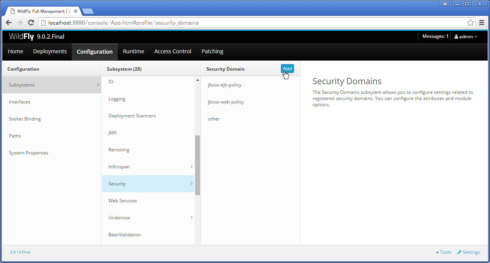
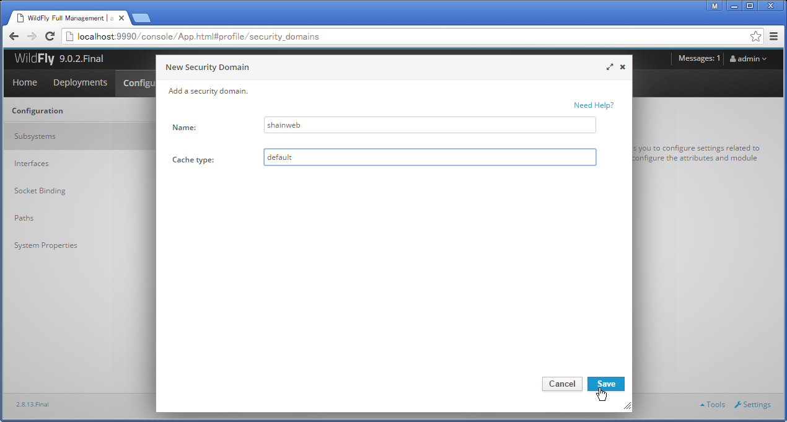
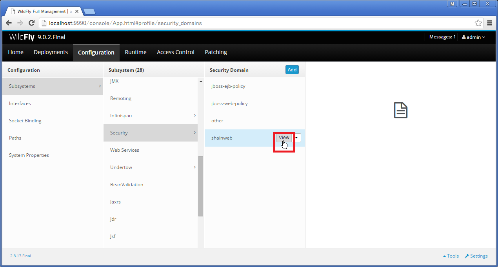
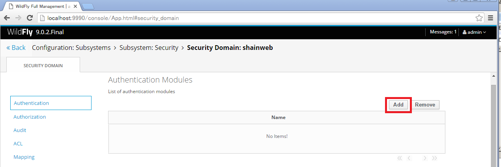
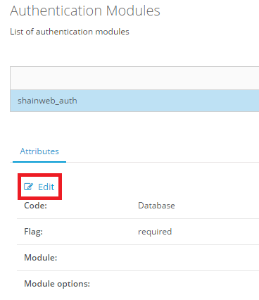
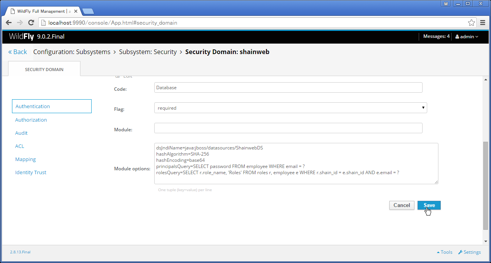
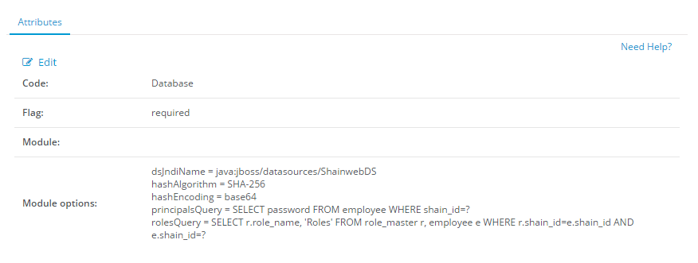

7. ログイン認証画面の追加¶
ログイン機能を追加します。ここでは Basic 認証を追加します。
7.1. web.xml の修正¶
WEB-INF フォルダ配下の web.xml (web-app タグ内) に以下を追記して保存してください。
<security-role>
<role-name>ADMIN</role-name>
</security-role>
<security-role>
<role-name>USER</role-name>
</security-role>
<security-constraint>
<web-resource-collection>
<web-resource-name>Admin Resource</web-resource-name>
<url-pattern>/*</url-pattern>
</web-resource-collection>
<auth-constraint>
<role-name>ADMIN</role-name>
</auth-constraint>
</security-constraint>
<login-config>
<auth-method>BASIC</auth-method>
<realm-name>Authentication</realm-name>
</login-config>
7.2. jboss-web.xml の新規作成¶
WEB-INF フォルダ配下の jboss-web.xml を新規作成してください。作成後、内容を以下のように修正して保存してください。
<?xml version="1.0"?>
<!DOCTYPE jboss-web PUBLIC "-//JBoss//DTD Web Application 5.0//EN"
"http://www.jboss.org/j2ee/dtd/jboss-web_5_0.dtd">
<jboss-web>
<security-domain>shainweb</security-domain>
</jboss-web>
7.3. WildFly の設定追加¶
認証機能を追加するには WildFly に追加の設定が必要となります。
管理画面 にログインします。
Configuration タブの SubSystems から Security を選択します。
「Add」ボタンを押下し、「New Security Domain」ダイアログで以下の値を設定し、「Save」ボタンを押下します。
名前 設定文字列 Name: shainweb Cache type: default 「Security Domain」の一覧に shainweb が追加されます。選択し「View」ボタンを押下します。
「Authentication Modules」画面が表示されます。右のほうにある「Add」ボタンを押下します。
「New login-module」ダイアログが表示されます。以下の値を設定し、「Save」ボタンを押下します。

名前 設定文字列 Name: shainweb_auth Code: Database Flag: required 「Authentication Modules」画面に「shainweb_auth」が追加されます。「Attributes」の下にある「Edit」ボタンを押下します。
「Modules options:」に以下の値を設定し、「Save」ボタンを押下します。
キー=設定文字列 dsJndiName=java:jboss/datasources/ShainwebDS hashAlgorithm=SHA-256 hashEncoding=base64 principalsQuery=SELECT password FROM employee WHERE shain_id = ? rolesQuery=SELECT r.role_name, ‘Roles’ FROM role_master r, employee e WHERE r.role_id = e.role_id AND e.shain_id = ? 編集内容が確定されます。

{kind=link}
{kind=link}
{kind=link}
{kind=link}
{kind=link}
{kind=link}
{kind=link}
{kind=link}